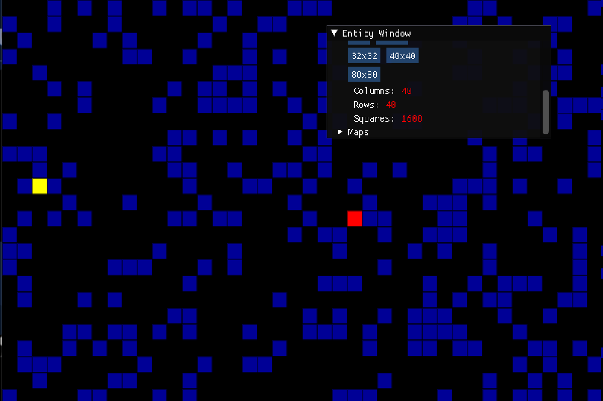

Pathfinding Sandbox
- rol
- Coautor
- stack
- Framework interno · ImGui
- equipo
- 2 programadores
Desarrollado como ejercicio académico colaborativo, este Pathfinding Sandbox explora algoritmos clásicos de búsqueda sobre una cuadrícula configurable. El escenario incluye un agente controlable, un nodo objetivo y casillas azules de obstáculo que no se pueden atravesar. El usuario puede lanzar distintas estrategias, destacando A* por sus garantías de camino óptimo y su eficiencia.
La capa visual se renderiza con el framework gráfico interno de la escuela, mientras que ImGui habilita un panel interactivo para ajustar heurísticas, activar o desactivar movimiento diagonal e inspeccionar en tiempo real los conjuntos abiertos y cerrados. Esta combinación facilita comparar el comportamiento de los algoritmos y entender cómo las funciones de coste influyen en el camino final.
El proyecto también incluye un modo “Pac-Man” que recrea el laberinto clásico. Los fantasmas enemigos reutilizan la implementación de A* para perseguir al jugador, mostrando cómo el sistema de navegación se adapta de un sandbox de experimentación a un contexto de gameplay.

créditos
- Autores
- Carlos Mazcuñán, Marc Folgado
consejo: usa ← → para pasar de un proyecto a otro